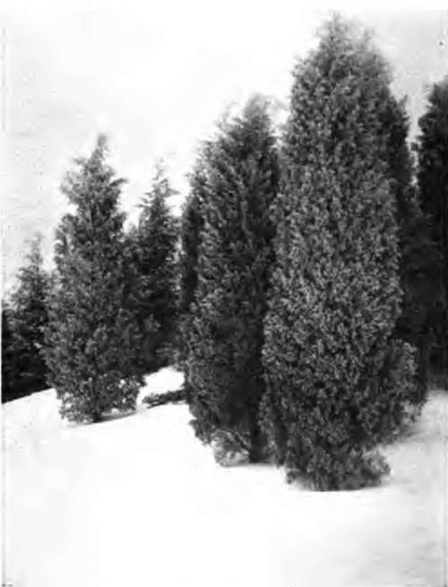

Seasonal Effects With Flowers. Continued
Description
This section is from the book "Flower Gardening", by H. S. Adams. Also available from Amazon: Flower gardening.
Seasonal Effects With Flowers. Continued
Some of the best August notes are furnished by Phlox paniculata, the two kinds of boltonia, Lilium aura turn and Lilium speciosum.
Various hardy asters, notably A. novae angliae and A. laevis, the Japanese anemone, Aconitum autumnale and the beautiful new heleniums may be used for September.
The chrysanthemum is the unique October note. Fortunately this is a most generous one as to variation in color and duration of bloom. The old-fashioned large yellow, pink and white varieties and the rose and red "buttons" are particularly good for bold groupings.
Where a hedge is not used for a rim, shrubs may close the farther end of some of the paths, or of all but the January one. And if the paths diverge until there is a wide space between every two, a few shrubs or small evergreen trees can be planted there. Some of these may be fairly tall in order to create partial shade along a path; that would make a place for shade-loving plants. The shrubs, of course, ought to carry out the seasonal idea.
Occasionally a flower runs over from one month into another; in that case let it do the same thing with the corresponding paths. But there must be less consistent straying, too. While the main showing of foxgloves belongs in the June path, let there be a few spires in the January path and so with enough of the other flowers to brighten up bare spots. With some of the flowers not required for accenting notes it will be just as well to plant the entire stock in a path where it does not belong if bloom is more needed there at a given time.
The same idea is readily applicable to a garden of the four seasons. Lay out four paths instead of twelve and name them spring, summer, autumn and winter: The last to be the entrance one. The remaining three may be Y-shaped to advantage: This to break up the wider spaces and to add to the number of vistas.
And, in general, what has been said applies to any effort to give the garden seasonal effects. It is not argued that there must be such effects; rather that they add immeasurably to the enjoyment to be derived from the growing of flowers as a pastime, not a little of which enjoyment lies in the planning and the waiting for results.
Nor is it argued that seasonal notes are so to concentrate attention as to exclude the following out of ordinary garden desires. One might grow a hundred kinds of flowers and yet use only a single accent—the daffodil in April, the columbine in May, the rose in June, the larkspur in July, the speciosum lily in August, the Japanese anemone in September or the chrysanthemum in October; one covers the ground sufficiently if it is enough for you.
It requires no profound knowledge of garden material to work out these beautiful forms of garden expression; not infrequently they come without conscious effort. Blooming season, color, height and habit of growth are the important things to know, after the question as to what plants will do well in a given situation has been decided.
The blooming season is easily determined. color is much more difficult. It must be not only decided in tone but—unless the blossoms are very large—spread so profusely over the plant as to furnish solidity of effect. Whether the color is used for harmony, as lavender Canterbury bells with purple ones, or for sheer contrast, as white and pink foxgloves together, matters little, so long as there is no mixture other than the pardonable land. This is letting, say, a white iris or two stray over into the adjoining colony of purple ones—just as if nature had had the ordering of it. While two kinds of one flower, or two kinds of flowers, are a safe rule it is not one to be adhered to rigidly; good taste can always settle that.
Height is mentioned because even carpeting plants, such as Phlox subulata, may be used in spring, whereas later in the season, unless there is absolute isolation, only taller material will stand out by itself. As for habit of growth, foliage and stems may make one plant more desirable than another for a certain spot; thus Yucca filamentosa, for its form, might be a better July note somewhere than Platycodon grandiflorum, for its blue color.
"For assured seasonal notes use, to again quote Bacon, Such things as are Greene all Winter".
Perennials offer the lines of least resistance, because of their permanence; but some of the biennials, or plants best grown as such, are invaluable. These include self colored sweet-william and columbine, Myosotis dissitiflora, Iceland poppy and hollyhock, as well as foxglove and Canterbury bell. Annuals are more useful as summer filllers than as summer accents, though at times not to be despised in the latter capacity.
Miss Gertrude Jekyll's theory of a seasonal garden is worth close study because she has put it to a practical test on her English place. "I believe," she says, "that the only way in which it can be made successful is to devote certain borders to certain times of year: each border or garden region to be bright for from one to three months".
No doubt this is the best, if not the only, way when striving for the ideal is made a life work, as in Miss Jekyll's case. But the plan is an admirable one for a place that is either very large or sufficiently diversified to permit the division of the garden into segregated sections. Miss Jekyll has an enormous summer border, a secluded spring garden and so on.
The plan moreover is one that, like Bacon's, has suggestions for the least of places if the mind of the flower lover is at all adaptive. Certainly the secluded spring garden is a hint for any one who wants to strike a seasonal note that need mean no more labor than one is disposed to put into it.
Continue to:
- prev: Chapter XV. Seasonal Effects With Flowers
- Table of Contents
- next: Chapter XVI. The Making Of Flower Pictures